- 00 开篇词 练好基本功，优秀工程师成长第一步.md.html
- 01 CISC & RISC：从何而来，何至于此.md.html
- 02 RISC特性与发展：RISC-V凭什么成为“半导体行业的Linux”？.md.html
- 03 硬件语言筑基（一）：从硬件语言开启手写CPU之旅.md.html
- 04 硬件语言筑基（二）_ 代码是怎么生成具体电路的？.md.html
- 05 指令架构：RISC-V在CPU设计上到底有哪些优势？.md.html
- 06 手写CPU（一）：迷你CPU架构设计与取指令实现.md.html
- 07 手写CPU（二）：如何实现指令译码模块？.md.html
- 08 手写CPU（三）：如何实现指令执行模块？.md.html
- 09 手写CPU（四）：如何实现CPU流水线的访存阶段？.md.html
- 10 手写CPU（五）：CPU流水线的写回模块如何实现？.md.html
- 11 手写CPU（六）：如何让我们的CPU跑起来？.md.html
- 12 QEMU：支持RISC-V的QEMU如何构建？.md.html
- 13 小试牛刀：跑通RISC-V平台的Hello World程序.md.html
- 14 走进C语言：高级语言怎样抽象执行逻辑？.md.html
- 15 C与汇编：揭秘C语言编译器的“搬砖”日常.md.html
- 16 RISC-V指令精讲（一）：算术指令实现与调试.md.html
- 17 RISC-V指令精讲（二）：算术指令实现与调试.md.html
- 18 RISC-V指令精讲（三）：跳转指令实现与调试.md.html
- 19 RISC-V指令精讲（四）：跳转指令实现与调试.md.html
- 20 RISC-V指令精讲（五）：原子指令实现与调试.md.html
- 21 RISC-V指令精讲（六）：加载指令实现与调试.md.html
- 22 RISC-V指令精讲（七）：访存指令实现与调试.md.html
- 23 内存地址空间：程序中地址的三种产生方式.md.html
- 24 虚实结合：虚拟内存和物理内存.md.html
- 25 堆&栈：堆与栈的区别和应用.md.html
- 26 延迟分配：提高内存利用率的三种机制.md.html
- 27 应用内存管理：Linux的应用与内存管理.md.html
- 28 进程调度：应用为什么能并行执行？.md.html
- 29 应用间通信（一）：详解Linux进程IPC.md.html
- 30 应用间通信（二）：详解Linux进程IPC.md.html
- 31 外设通信：IO Cache与IO调度.md.html
- 32 IO管理：Linux如何管理多个外设？.md.html
- 33 lotop与lostat命令：聊聊命令背后的故事与工作原理.md.html
- 34 文件仓库：初识文件与文件系统.md.html
- 35 Linux文件系统（一）：Linux如何存放文件？.md.html
- 36 Linux文件系统（二）：Linux如何存放文件？.md.html
- 37 浏览器原理（一）：浏览器为什么要用多进程模型？.md.html
- 38 浏览器原理（二）：浏览器进程通信与网络渲染详解.md.html
- 39 源码解读：V8 执行 JS 代码的全过程.md.html
- 40 内功心法（一）：内核和后端通用的设计思想有哪些？.md.html
- 41 内功心法（二）：内核和后端通用的设计思想有哪些？.md.html
- 42 性能调优：性能调优工具eBPF和调优方法.md.html
- 先睹为快：迷你CPU项目效果演示.md.html
- 加餐01 云计算基础：自己动手搭建一款IAAS虚拟化平台.md.html
- 加餐02 学习攻略（一）：大数据&云计算，究竟怎么学？.md.html
- 加餐03 学习攻略（二）：大数据&云计算，究竟怎么学？.md.html
- 加餐04 谈谈容器云与和CaaS平台.md.html
- 加餐05 分布式微服务与智能SaaS.md.html
- 国庆策划01 知识挑战赛：检验一下学习成果吧！.md.html
- 国庆策划02 来自课代表的学习锦囊.md.html
- 国庆策划03 揭秘代码优化操作和栈保护机制.md.html
- 温故知新 思考题参考答案（一）.md.html
- 用户故事 我是怎样学习Verilog的？.md.html
- 结束语 心若有所向往，何惧道阻且长.md.html
- 捐赠
27 应用内存管理：Linux的应用与内存管理
你好，我是LMOS。
前面几节课我们学了不少内存相关的基础知识，今天我们来研究一下应用程序的内存管理。
应用程序想要使用内存，必须得先找操作系统申请，我们有必要先了解一下Linux内核怎么来管理内存，这样再去分析应用程序的内存管理细节的时候，思路才更顺畅。
之后，我还选择了现在最流行的Golang语言作为参考，带你梳理内存管理中各式各样的数据结构，为你揭秘Golang为什么能够实现高效、自动化地管理内存。
这节课的配套代码，你可以从这里下载。让我们进入正题吧！
硬件架构
现代计算机体系结构被称为Non-Uniform Memory Access（NUMA），NUMA下物理内存是分布式的，由多个计算节点组成，每个 CPU 核都会有自己的本地内存。CPU 在访问它的本地内存的时候就比较快，访问其他 CPU 核内存的时候就比较慢。
我们最熟悉的PC机和手机，就可以看作是只有一个计算节点的NUMA，这算是NUMA中的特例，我来为你画一幅逻辑视图，你一看就明白了，如下图所示：
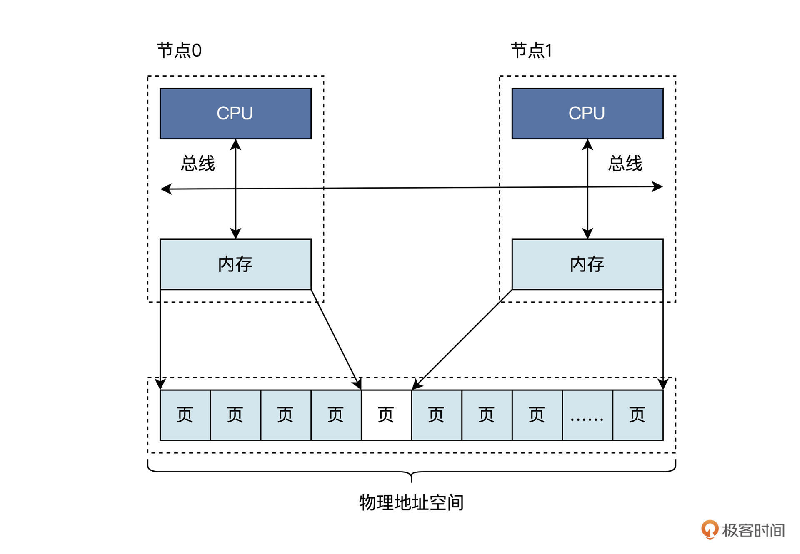
我们看到每个节点都是由CPU、总线、内存组成的。节点之间的内存大小可能不同，但是这些内存都是统一编址到同一个物理地址空间中的，即无论是节点0的内存还是节点1的内存都有唯一的物理地址，在一个节点内部的物理内存之间可能存在空洞，节点和节点间的物理内存页可能有空洞。何谓地址空洞？就是这一段地址是不对应到内存单元里的。
一般情况下，手机和个人电脑都只有一个节点。服务器和大型计算机可能有多个节点，节点甚至可以动态插入或者移除。关于硬件架构，我们就回顾到这里，下面我们去看看Linux是如何在NUMA硬件架构上管理内存的。
Linux物理内存管理
上面的NUMA体系架构上，节点内部的内存和节点之间的内存，其访问速度是不一样的，这无疑是提升了Linux的内存管理的复杂度。因此，Linux用了大量的数据结构来表示计算节点，内存、内存页面，以及它们之间的关系。
我为你列出了一张表格，梳理不同的数据结构：- 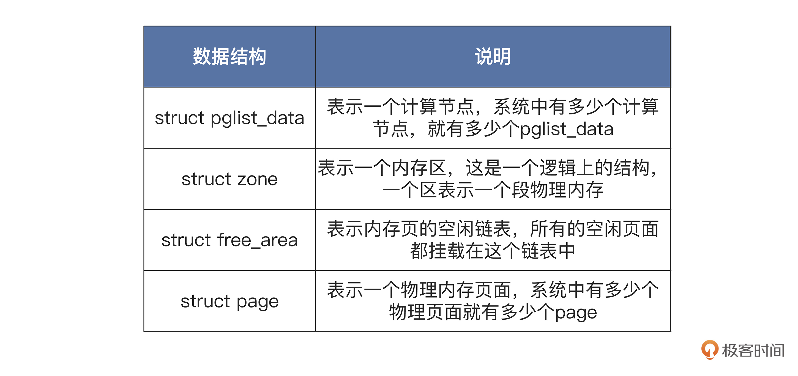
在计算机系统中，至少有一个默认的pglist_data结构，如果计算节点增加，pglist_data结构也会随之增加。
pglist_data结构中包含自身节点CPU的id，有指向本节点和其它节点的内存区zone结构的指针。而在zone结构中包含一个free_area结构的数组，用于挂载本内存区中的所有物理内存页，也就是page结构。
Linux的物理内存分配过程是这样的：通过pglist_data结构，先找到自己节点的zone结构的指针，如果不能满足要求，则查找其它节点的zone结构；然后，找到zone结构中的free_area结构数组；最后，要找到其中的page结构，并返回。释放过程则是分配过程的相反过程。
下面，我为你画一幅表示这些数据结构的关系图，你看看图就明白了。
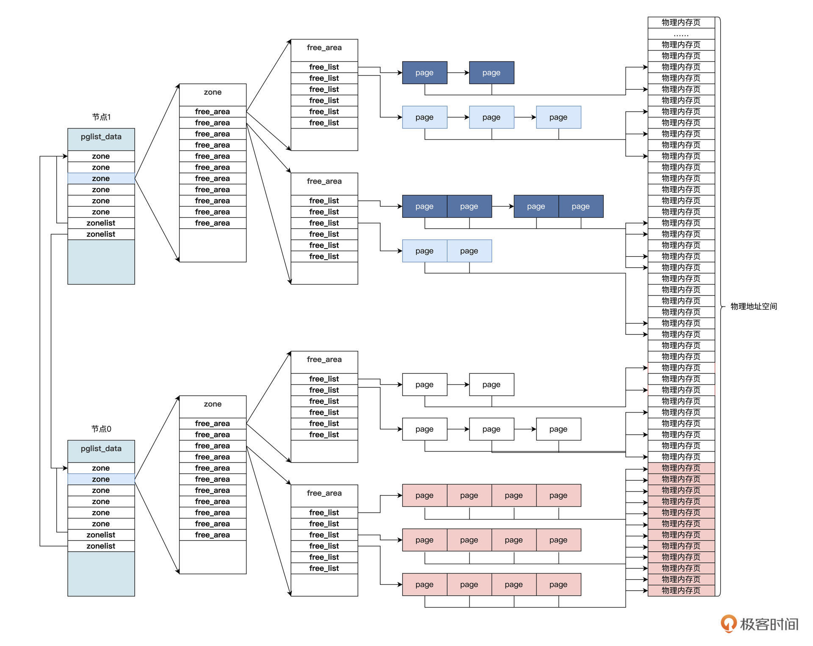
有了上图，应该能帮助你在大脑中建立Linux物理内存分配释放的运行蓝图。Linux的虚拟内存是建立在物理内存之上的，关于虚拟内存，你可以回到应用与内存部分前面的三节课复习一下。
关于Linux内核的内存管理，我们就研究到这里，如果你想更细致地了解Linux内核的内存管理，可以阅读我的上一门课程《操作系统实战45讲》中[第二十二节课]和[第二十三节课]，那里有非常详尽的讨论。
Golang内存管理
现在到了我们今天课程的重点—— 搞清楚Golang语言是如何管理内存的。后面的代码我选择的是Go 1.5这个版本 。
Golang（又称Go）是Google公司于2007年召集了三位大神，罗伯特·格瑞史莫（Robert Griesemer），罗勃·派克（Rob Pike）及肯·汤普逊（Ken Thompson，开发了Unix和C语言），开发的一种静态强类型、编译型、并发型，并具有垃圾回收功能的编程语言。业界戏称为C2.0。
到了2016年，Go发展起来了，它被软件评价公司 TIOBE 选为“TIOBE 2016 年最佳语言”。现在，Go语言在业界是非常流行的编程语言。它的语法接近C语言，支持垃圾回收功能。Go的并行模型是以东尼·霍尔的通信顺序进程（CSP）为基础，与C++相比，Go并不包括如枚举、异常处理、继承、泛型、断言、虚函数等功能，但增加了切片(Slice) 型、并发、管道、垃圾回收、接口（Interface）等特性的语言级支持。
关于Go语言的历史和基本情况，我先点到为止，回到我们的主题——Go的内存管理。
像Go这种支持内存管理和并行功能的语言，一般都是有一个运行时（runtime），它就像针对这个语言开发的一个小型os，为该语言开发的程序提供一个标准可靠的执行环境。这个环境提供了内存管理和并行模型等一些其它功能，每个Go程序加载之时，就会先执行Go运行时环境。
下面我们看一看Go语言运行时的内存空间结构，如下图所示：
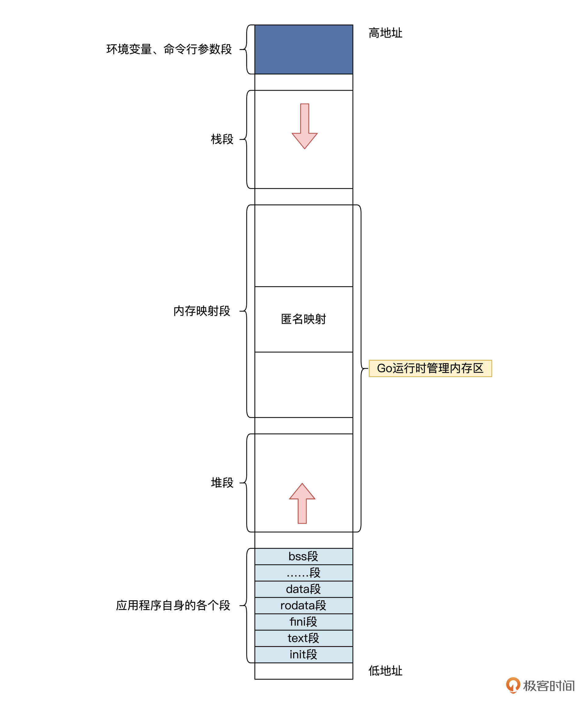
看完这张示意图，你可能会想：“这和普通应用的内存空间结构并没有什么区别啊？”
是的，但是普通应用程序是调用malloc或者mmap，向OS申请内存；而Go程序是通过Go运行时申请内存，Go运行时会向OS申请一大块内存，然后自己进行管理。Go应用程序分配内存时是直接找Go运行时，这样Go运行时才能对内存空间进行跟踪，最后做好内存垃圾回收的工作。
Go运行时中提供了一些向操作系统分配和释放内存的函数，我举两个例子：runtime.sysAlloc会从操作系统中获取一大块可用的内存空间，可能为几百 KB 或者几 MB；runtime.sysFree 会在程序发生内存不足时释放内存。
这些函数形成了一个Go运行时访问内存时的抽象层，在不同的操作系统上，这些个函数调用操作系统API也是不同的。比方说，在Linux上调用的是 mmap、munmap 和 madvise 等系统调用。
下面咱们看一看runtime.sysAlloc的代码，如下所示：
func sysAlloc(n uintptr, sysStat *sysMemStat) unsafe.Pointer {
p, err := mmap(nil, n, _PROT_READ|_PROT_WRITE, _MAP_ANON|_MAP_PRIVATE, -1, 0)
if err != 0 {
if err == _EACCES {
print("runtime: mmap: access denied\n")
exit(2)
}
if err == _EAGAIN {
print("runtime: mmap: too much locked memory (check 'ulimit -l').\n")
exit(2)
}
return nil
}
sysStat.add(int64(n))
return p
}
上面第二行代码中调用mmap调用，是匿名私有、可读写映射，fd传的参数是-1，表示映射的虚拟空间与文件不相关。- 但是Go运行时调用runtime.sysAlloc函数返回一个大块内存空间之后，是怎么管理的呢？我们继续往下看。
Go运行时把这个大块内存称为arena区域，其中又划分为8KB大小页，其结构如下图所示：
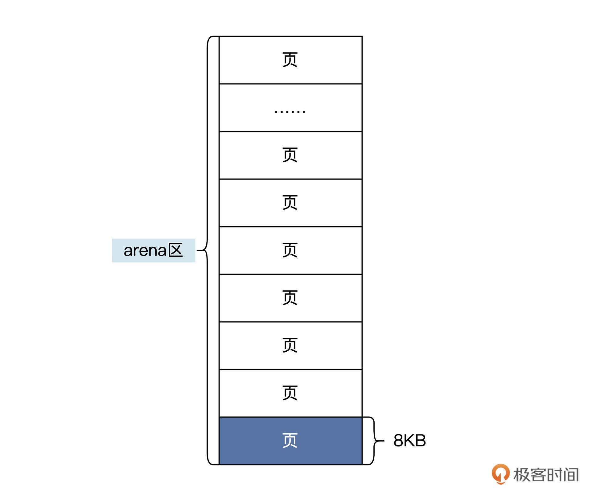
上图中的页和操作系统中的页不是一回事，这里的页是Go运行时定义的，通常是操作系统页的整数倍。
Golang内存管理数据结构
看到上图，你还是感觉十分空洞么？那是因为你没有弄清楚Go内存管理的数据结构，Go内存管理的有五大数据结构，分别是mheap、heapArena、mcentral、mcache、mspan，你或许不知道这些结构是什么含义，下面就让我挨个为你拆解一下。
mheap数据结构
首先，我们一起来看看mheap数据结构。一个Go应用中，只有一个mheap数据结构，它负责管理应用所有变量、数据对象使用的内存。
mheap结构在应用启动时由Go运行时初始化。需要注意的是，mheap结构并不负责管理heapArena、mcentral、mcache、mspan这些数据结构实例所占的内存，也就是说，这些结构占用的内存不是由Go内存管理负责的，而是由Go在运行时直接通过系统内存API函数来分配内存空间。
mheap结构的代码如下所示：
type mheap struct {
//全局锁
lock mutex
//页面分配的数据结构
pages pageAlloc
//所有的mspan结构指针
allspans []*mspan
……略
//heapArena结构指针数组
arenas [1 << arenaL1Bits]*[1 << arenaL2Bits]*heapArena
……略
//当前区的开始和结束地址
curArena struct {
base, end uintptr
}
//mcentral结构数组
central [numSpanClasses]struct {
mcentral mcentral
pad [cpu.CacheLinePadSize - unsafe.Sizeof(mcentral{})%cpu.CacheLinePadSize]byte
}
……略
}
我删除了mheap结构中的许多字段，这不影响我们理解代码流程逻辑。- 我们接着来看看heapArena结构，如下所示：
type heapArena struct {
//存储此区域中位图的指针
bitmap [heapArenaBitmapBytes]byte
//每个区的mspan指针数组
spans [pagesPerArena]*mspan
//pageInUse是一个位图，指示哪些span处于使用状态
pageInUse [pagesPerArena / 8]uint8
……略
//zeroedBase记录此区中第一页的第一个字节地址
zeroedBase uintptr
}
heapArena结构可以管理一个区，这个区的大小一般为64MB。我把具体情况画一幅图，你就明白了，如下所示：- 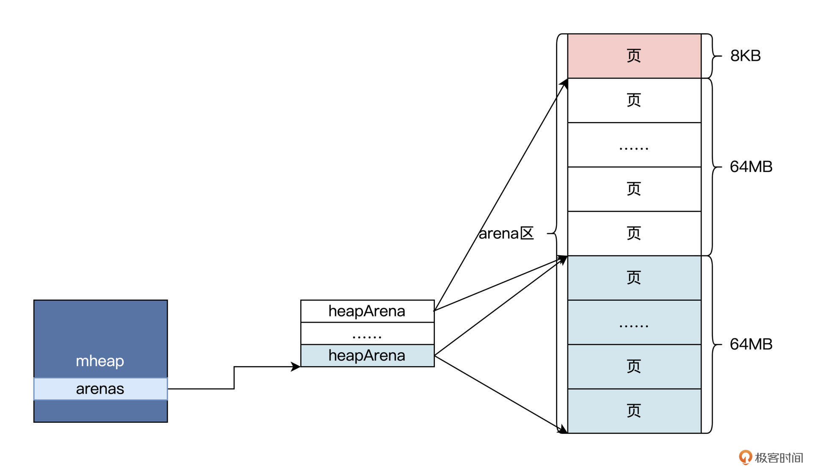
上图中展示了多个页合并一个heapArena的过程，多个heapArana由mheap管理，这显然是为了方便mheap对整个内存空间进行扩大和缩小。
mcentral数据结构
在mheap结构中，还有一个重要的mcentral数据结构数组。这个命名是想表达的是它是中央的、核心的，非常重要的。
mcentral数据结构里到底有什么重要的内容呢？我们结合代码来揭秘，代码如下所示：
type mcentral struct {
//跨度类
spanclass spanClass
//具有空闲对象的mspan列表
partial [2]spanSet
//具有非空闲对象的mspan列表
full [2]spanSet
}
type spanSet struct {
spineLock mutex
//指向spanSetBlock
spine unsafe.Pointer
//Spine长度
spineLen uintptr
//略……
}
const (
//常量
spanSetBlockEntries = 512 // 4KB on 64-bit
spanSetInitSpineCap = 256 // Enough for 1GB heap on 64-bit
)
type spanSetBlock struct {
//mspan结构指针数组
spans [spanSetBlockEntries]*mspan
}
通过上述代码，我们发现mcentral结构中的跨度类就是一个整数。至于这个整数有什么作用，我们后面再说。- 这里的spanSet相当于一个管理动态数组的结构，spanSet里面包括spanSetBlock指针和长度，而spanSetBlock中才是mspan指针。你可以把spanSet和spanSetBlock的组合理解为一个动态增长的列表，该列表中保存着mspan指针。
那为什么mcentral结构中的partial和full要定义成两个元素的数组呢？这是为了对mspan进行分类，优化垃圾回收器的性能。
让我们回到mheap结构中，可以看到有一个mcentral结构数组，大小与跨度类有关。我们用一幅图来总结一下这几个数据结构的关系，如下图所示：
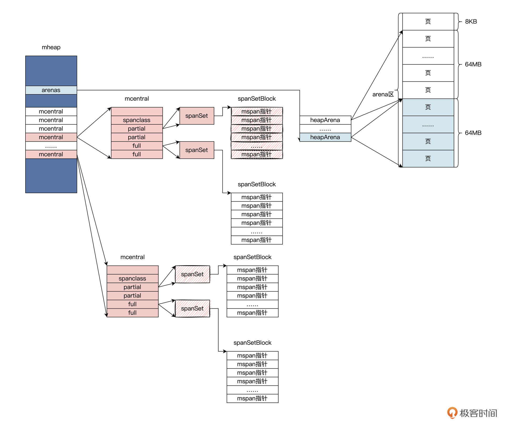
上图中，展示了从mheap到mcentral再到mspan的关系，通过mheap这个全局的数据结构，就能找到内存相关的全部数据结构。
不过，我们始终没有搞清楚，Go运行时如何利用这些个数据结构管理分配内存的。想解决这个问题，我们先得理解一个叫做mspan的数据结构。
mspan数据结构
mspan数据结构是Go运行时内存管理的基本单元，mspan中的起始地址指向一大块内存，这块内存是由一片连续的、8KB的页组成的。这个8KB页就是arean区的页，其中还有mspan分配对象的大小规格、占用页的数量等内容。
我们下面看一看它的代码，如下所示：
type mspan struct {
// mspan双向链表
next *mspan
prev *mspan
// 该mspan页的开始地址
startAddr uintptr
// 该mspan包含的页数
npages uintptr // number of pages in span
// 略……
// 用于定位下一个可用的object, 大小范围在 0- nelems 之间
freeindex uintptr
// mspan里object的数量
nelems uintptr
// 用于缓存freeindex开始的bitmap, 缓存的bit值与原值相反
// ctz函数可以通过这个值快速计算出下一个free object的index
allocCache uint64
//allocBits标记mspan中的对象哪些是被使用的，哪些是未被使用的
allocBits *gcBits
//gcmarkBits标记mspan中的对象哪些是被标记了的，哪些是未被标记的
gcmarkBits *gcBits
// 已经分配的object的数量
allocCount uint16
// 跨度类
spanclass spanClass
// mspan状态
state mSpanStateBox
// 决定分配的对象是否需要初始化为0
needzero uint8
// object的大小
elemsize uintptr
// mspan结束地址
limit uintptr
}
上述代码中，字段用于管理一个由几个页面组成的空间，这个空间会切成一个个小块空间。这些小块儿空间我们称为对象，相关字段中记录了对象的大小和个数。- 你看看我后面画的这幅图就明白了。
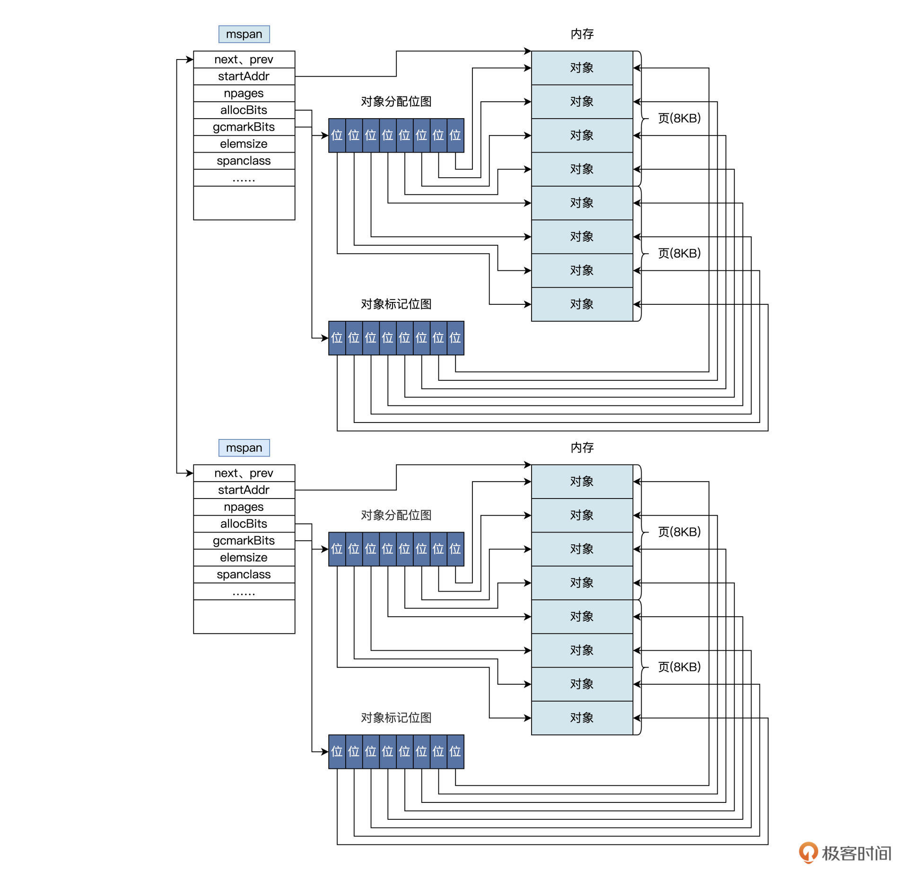
对照示意图我们可以看到，两个mspan结构中各自有2个页面，8个对象，两组位图。这两组位图里，一组位图用于分配对象，另一组位图用于垃圾回收器扫描时的标记，标记哪些对象是空闲且已经被扫描过了，等待回收。
对象的多少决定了位图的大小，而对象的个数和大小决定了页面的多少。那么在创建mspan时，怎么确定这些数据呢？这时就不得不说那个早该说的跨度类了。其实spanClass类型就是uint8类型，它是一个数组索引0~67，现在我们看一看它到底索引的是什么 ，代码如下所示：
var class_to_size = [_NumSizeClasses]uint16{0, 8, 16, 24, 32, 48, 64, 80, 96, 112, 128, 144, 160, 176, 192, 208, 224, 240, 256, 288, 320, 352, 384, 416, 448, 480, 512, 576, 640, 704, 768, 896, 1024, 1152, 1280, 1408, 1536, 1792, 2048, 2304, 2688, 3072, 3200, 3456, 4096, 4864, 5376, 6144, 6528, 6784, 6912, 8192, 9472, 9728, 10240, 10880, 12288, 13568, 14336, 16384, 18432, 19072, 20480, 21760, 24576, 27264, 28672, 32768}
var class_to_allocnpages = [_NumSizeClasses]uint8{0, 1, 1, 1, 1, 1, 1, 1, 1, 1, 1, 1, 1, 1, 1, 1, 1, 1, 1, 1, 1, 1, 1, 1, 1, 1, 1, 1, 1, 1, 1, 1, 1, 1, 1, 2, 1, 2, 1, 2, 1, 3, 2, 3, 1, 3, 2, 3, 4, 5, 6, 1, 7, 6, 5, 4, 3, 5, 7, 2, 9, 7, 5, 8, 3, 10, 7, 4}
这是两个数组，class_to_size数组表示当前spanClass对应的mspan中对象的大小，class_to_allocnpages数组表示当前spanClass对应的mspan中占用的页面数 ，有了这些数据就能指导我们建立mspan结构了。- Google官方给出了一个方便观察的数据表，如下所示。
// 索引值 对象大小 mspan的大小(页) 对象数量 末尾浪费的内存 最大浪费 最小对齐
// class bytes/obj bytes/span objects tail waste max waste min align
// 1 8 8192 1024 0 87.50% 8
// 2 16 8192 512 0 43.75% 16
// 3 24 8192 341 8 29.24% 8
// 4 32 8192 256 0 21.88% 32
// 5 48 8192 170 32 31.52% 16
// 6 64 8192 128 0 23.44% 64
// 7 80 8192 102 32 19.07% 16
// 8 96 8192 85 32 15.95% 32
// 9 112 8192 73 16 13.56% 16
// 10 128 8192 64 0 11.72% 128
// 11 144 8192 56 128 11.82% 16
// 12 160 8192 51 32 9.73% 32
// 13 176 8192 46 96 9.59% 16
// 14 192 8192 42 128 9.25% 64
// 15 208 8192 39 80 8.12% 16
// 16 224 8192 36 128 8.15% 32
// 17 240 8192 34 32 6.62% 16
// 18 256 8192 32 0 5.86% 256
// 19 288 8192 28 128 12.16% 32
// 20 320 8192 25 192 11.80% 64
// 21 352 8192 23 96 9.88% 32
// 22 384 8192 21 128 9.51% 128
// 23 416 8192 19 288 10.71% 32
// 24 448 8192 18 128 8.37% 64
// 25 480 8192 17 32 6.82% 32
// 26 512 8192 16 0 6.05% 512
// 27 576 8192 14 128 12.33% 64
// 28 640 8192 12 512 15.48% 128
// 29 704 8192 11 448 13.93% 64
// 30 768 8192 10 512 13.94% 256
// 31 896 8192 9 128 15.52% 128
// 32 1024 8192 8 0 12.40% 1024
// 33 1152 8192 7 128 12.41% 128
// 34 1280 8192 6 512 15.55% 256
// 35 1408 16384 11 896 14.00% 128
// 36 1536 8192 5 512 14.00% 512
// 37 1792 16384 9 256 15.57% 256
// 38 2048 8192 4 0 12.45% 2048
// 39 2304 16384 7 256 12.46% 256
// 40 2688 8192 3 128 15.59% 128
// 41 3072 24576 8 0 12.47% 1024
// 42 3200 16384 5 384 6.22% 128
// 43 3456 24576 7 384 8.83% 128
// 44 4096 8192 2 0 15.60% 4096
// 45 4864 24576 5 256 16.65% 256
// 46 5376 16384 3 256 10.92% 256
// 47 6144 24576 4 0 12.48% 2048
// 48 6528 32768 5 128 6.23% 128
// 49 6784 40960 6 256 4.36% 128
// 50 6912 49152 7 768 3.37% 256
// 51 8192 8192 1 0 15.61% 8192
// 52 9472 57344 6 512 14.28% 256
// 53 9728 49152 5 512 3.64% 512
// 54 10240 40960 4 0 4.99% 2048
// 55 10880 32768 3 128 6.24% 128
// 56 12288 24576 2 0 11.45% 4096
// 57 13568 40960 3 256 9.99% 256
// 58 14336 57344 4 0 5.35% 2048
// 59 16384 16384 1 0 12.49% 8192
// 60 18432 73728 4 0 11.11% 2048
// 61 19072 57344 3 128 3.57% 128
// 62 20480 40960 2 0 6.87% 4096
// 63 21760 65536 3 256 6.25% 256
// 64 24576 24576 1 0 11.45% 8192
// 65 27264 81920 3 128 10.00% 128
// 66 28672 57344 2 0 4.91% 4096
// 67 32768 32768 1 0 12.50% 8192
看到这里，我们就知道，分配小块内存就是找到对应的mspan数据结构，然后在该mspan结构中分配一个对象返回；如果没有对应的mspan就要建立一个。- 那下个问题就是，如何找到对应的mspan呢？让我们继续探索另一个数据结构——mcache。
mcache数据结构
在说明这个mcache数据结构之前，你需要先明白Go是支持并行化的，我们可以用go关键字建立很多个协程（ Goroutine），并行运行。那么Go是如何实现高度并行化的呢？这就不得不提到Go中的三个基本对象：G、M、P 。
它们到底是什么，我给你列了一个表格，如下所示：-
知道了这三个基本对象的意思，我们还得聊一聊Go运行时是怎样工作的。开始Go运行时会建立一个系统上的线程M，每一个运行的M会绑定一个P，线程M有了P之后会去检查并执行G对象（即协程）。然后每一个P中都保存着一个协程G的队列，除了每个P自身保存的G的队列外，还有一个全局的G队列。最后，M通过P从它的本地队列或者全局队列中获取G，并执行。
G、M、P三者的关系，如下图所示：
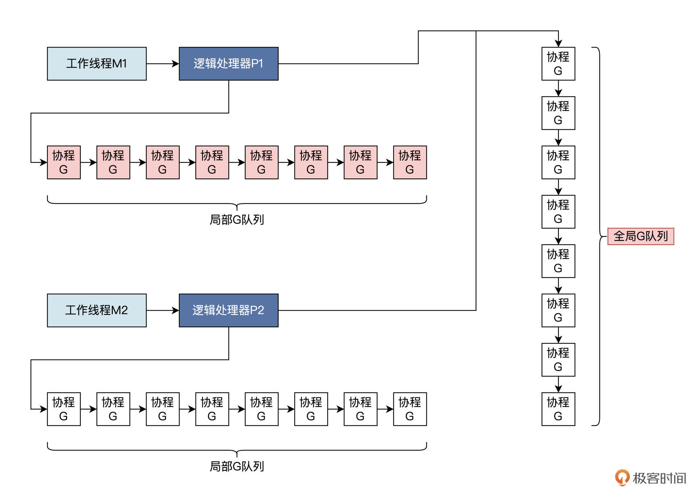
逻辑处理器P，不仅仅能获取局部或者全局G队列，其中还有一个指向mcahe数据结构的指针，指向各自独立的mcache数据结构。
mcache数据结构到底是什么，我们一起来看看代码：
type mcache struct {
// 触发堆采样相关的
nextSample uintptr
// 分配的可扫描堆字节数
scanAlloc uintptr
// tiny堆指针，指向当前tiny块的起始指针
tiny uintptr
// 当前tiny块的位置
tinyoffset uintptr
// 拥有当前mcache的P执行的tiny分配数;
tinyAllocs uintptr
// mspan指针数组，数组中指针指向不同大小对象的mspan
alloc [numSpanClasses]*mspan
// 略
}
上述代码的mcache结构中，字段tiny代表一个指针，指向一个内存块，这个内存块不由mspan管理，而是直接找操作系统申请。当申请对象小于16B的时候，就会使用 Tiny allocator 分配器，该分配器会根据tiny、tinyoffset 和 tinyAllocs 这三个字段的情况进行分配。分配算法类似于操作系统里brk系统调用的分配方法，你可以回顾前面第二十五节课的内容。- 我们知道mspan管理的对象，它的大小规格数据共有67类，前面讲跨度类的时候我提到过。Go运行时中定义的虽然是 _NumSizeClasses = 68 ，但其中包含一个大小为0的规格，我单独拎出来说一说，这个规格表示大对象，即 >32KB，这种对象只会分配到heap上，这个内存也不归mspan管理，所以不可能出现在alloc数组中。
剩下16-32KB大小的内存都会通过这个alloc数组里的 mspans 分配。每种类型的mspan有两个：一个是mspan列表中不包含指针的对象，另一个是mspan列表中包含指针的对象。这种区别让垃圾收集的工作变得更容易，因为它不必扫描不包含任何指针的范围。
为了让你更好地理解mcache结构，我为你画了一幅图，如下所示：
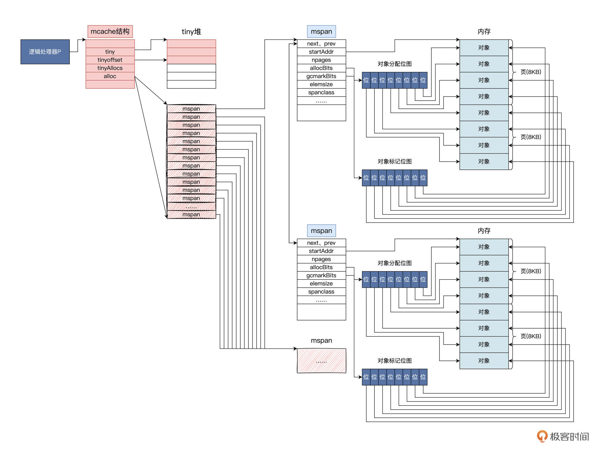
结合之前讲的G、M、P三者的关系，你是不是突然对mcache有了新一层理解了呢？正如其名，mcache的作用正是给P和在P上运行的G缓存mspan。这个设计的好处就是减少从mcentral和mheap全局数据结构中查找mspan的工作量，进而降低由此产生的锁冲突带来的性能损耗。
Golang内存分配过程
前面我们对mheap、mcentral、mspan、mcache数据以及G、M、P对象的关系，有了深入的理解，现在我们就可以梳理出Go内存的分配过程了。
根据G、M、P对象的关系，我们不难看出一个规律：同一个M在同一时刻，只能执行一个P，而P又只能运行一个协程。换句话说，分配内存始终是从P上运行一个协程开始的。
分配过程一共四步，我们分别来看看。
第一步，根据分配对象的大小，选用不同的结构做分配。包括3种情况：1.小于16B的用mcache中的tiny分配器分配；2.大于32KB的对象直接使用堆区分配；3.16B和32KB之间的对象用mspan分配。现在我们假定分配对象大小在16B和32KB之间。
第二步，在mcache中找到合适的mspan结构，如果找到了就直接用它给对象分配内存。我们这里假定此时没有在mcache中找到合适的mspan。
第三步，因为没找到合适的mspan，所以需要到mcentral结构中查找到一个mspan结构并返回。虽然mcentral结构对mspan的大小和是否空闲进行了分类管理，但是它对所有的P都是共享的，所以每个P访问mcentral结构都要加锁。mcentral结构就是一个中心缓存，我们假定Go运行时在进行了一些扫描回收操作之后，在mcentral结构还是没有找到合适的mspan。
接着是第四步，因为始终没找到合适的mspan，Go运行时就会建立一个新的mspan，并找到heapArea分配相应的页面，把页面地址的数量写入mspan中。然后，把mspan插入mcentral结构中，返回的同时将mspan插入mcache中。最后用这个新的mspan分配对象，返回对象地址。
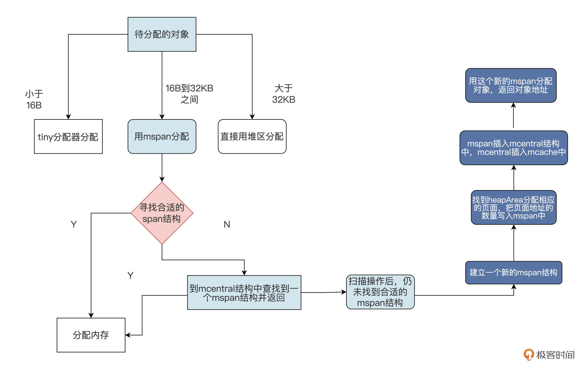
Go分配内存的流程就是这样，只要搞清楚那些数据结构的关系，相信你很容易就能理解。Go语言是开源的，你可以课后自己阅读一下。
Go程序中的分配的内存不需要程序手动释放，而是由Go运行时中的垃圾回收器自动回收。程序分配的内存如果不使用，就会成为“垃圾”，在运行过程中的某个时机，就会触发其中的垃圾回收协程，执行垃圾扫描和回收操作。
Go的垃圾回收器实现了一种三色标记的算法。一个对象可以被标记成白色、黑色、灰色三种颜色之一。白色是对象的初始颜色，如果扫描完成后，对象依然还是白色的，说明此对象是垃圾对象；黑色表示对象是可达的，即使用中的对象，黑色是已经被扫描的对象；灰色表示被黑色对象直接引用的对象，但还没对它进行扫描。
三色标记的规则是黑色对象不能指向白色对象，黑色对象可以指向灰色对象，灰色对象可以指向白色对象。
最后我再简单说说三色标记算法的主要流程。首先是初始状态，所有对象都被标记为白色；接着会寻找所有对象，比如被线程直接引用的对象，找到后就把该对象标记为灰色；下一步，把灰色对象标记为黑色，并把它们引用的对象标记为灰色；然后，持续遍历每一个灰色对象，直到没有灰色对象；最后，剩余的白色对象为垃圾对象。
这种方法看似很好，但是将垃圾回收协程和其它工作协程放在一起并行执行，会因为CPU的调度出现问题，导致对象引用和颜色出现错误，以至于回收了不能回收的对象。Go为了解决这个问题，又加入了写入内存屏障。这里我就不过多展开了，有兴趣的话你可以参考这里。
重点回顾
这节课，我们首先回顾了计算机硬件架构，然后学习了Linux是如何在NUMA硬件架构上管理内存的。之后，我们把重点放在了Golang的内存管理上面。
其实这节课我带你梳理Golang内存管理的思路，你以后研究其他源码的时候也可以试试看。我的切入点就是从源码里拎出最重要的几个数据结构，然后搞清楚这些数据结构之间的关系。在我们梳理代码关系的时候，如果脑子里无法建立准确关联，可以画图来辅助。
我的经验是，基本能图画出来的话，关系也就理清楚了。万一有些关联不确定，你可以做些猜想假设，并通过写点代码来验证。
最后，我画了一幅图，为你总结Golang内存管理所用数据结构的关系，如下所示：
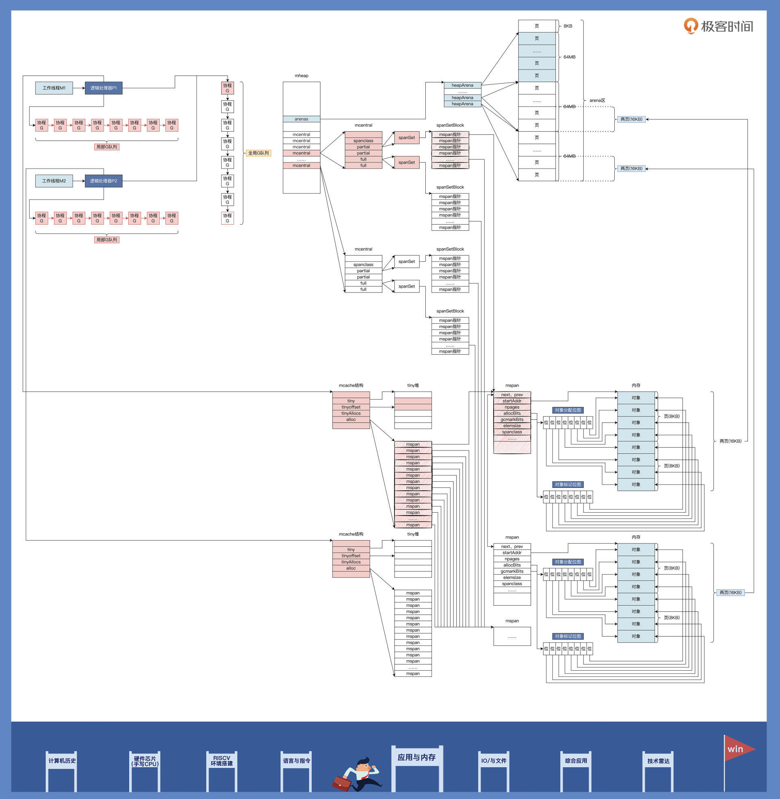
思考题
Golang有了mcentral结构，可以查找到mspan结构，为什么还要建立mcache结构呢？
欢迎你在留言区一起交流，积极互动有助于加深理解。另外也推荐你把这节课分享给更多的朋友，跟他一起学习进步。
© 2019 - 2023 Liangliang Lee. Powered by gin and hexo-theme-book.